<!DOCTYPE html>
<html lang="en">

<head><meta name="generator" content="Hexo 3.9.0">
  <meta charset="utf-8">
    
  <meta name="viewport" content="width=device-width, initial-scale=1, maximum-scale=1">
  <title>
    花瓣飘落效果 |  MonkeyInWind
  </title>
  
  <link rel="shortcut icon" href="/favicon.ico">
  
  <link rel="stylesheet" href="/css/style.css">
  <script src="/js/pace.min.js"></script>

  

<script type="text/javascript">
(function(i,s,o,g,r,a,m){i['GoogleAnalyticsObject']=r;i[r]=i[r]||function(){
(i[r].q=i[r].q||[]).push(arguments)},i[r].l=1*new Date();a=s.createElement(o),
m=s.getElementsByTagName(o)[0];a.async=1;a.src=g;m.parentNode.insertBefore(a,m)
})(window,document,'script','//www.google-analytics.com/analytics.js','ga');

ga('create', 'UA-155359064-1', 'auto');
ga('send', 'pageview');

</script>


  

</head>

</html>

<body>
  <div id="app">
    <main class="content">
      <section class="outer">
  <article id="post-petalsFluttered" class="article article-type-post" itemscope
  itemprop="blogPost" data-scroll-reveal>

  <div class="article-inner">
    
    <header class="article-header">
       
<h1 class="article-title sea-center" style="border-left:0" itemprop="name">
  花瓣飘落效果
</h1>
  

    </header>
    

    
    <div class="article-meta">
      <a href="/post/petalsFluttered/" class="article-date">
  <time datetime="2019-12-29T12:55:42.046Z" itemprop="datePublished">2019-12-29</time>
</a>
      
    </div>
    

    
    
    <div class="tocbot"></div>


    

    <div class="article-entry" itemprop="articleBody">
      


      

      
      <p>先上效果：<a href="https://monkeyinwind.github.io/canvaspetal/index.html" target="_blank" rel="noopener">https://monkeyinwind.github.io/canvaspetal/index.html</a><br>github：<a href="https://github.com/MonkeyInWind/canvaspetal" target="_blank" rel="noopener">https://github.com/MonkeyInWind/canvaspetal</a></p>
<a id="more"></a>
<p>这个demo写了很久了，今天有时间简单写一下过程。<br>用了react，这个不重要，随便用什么环境都可以。<br>首先花瓣要有素材，随便搜了一下，切了几个出来。</p>
<p>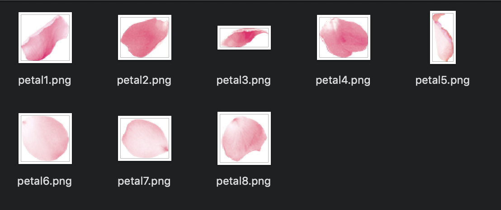</p>
<h1 id="1、在页面上添加一个canvas"><a href="#1、在页面上添加一个canvas" class="headerlink" title="1、在页面上添加一个canvas"></a>1、在页面上添加一个canvas</h1><p>整个页面只有一个canvas，我们需要这个canvas占满整个浏览器可视区，并且在浏览器窗口改变大小的时候依然和可视区大小相同，同时给canvas加个背景色。<br>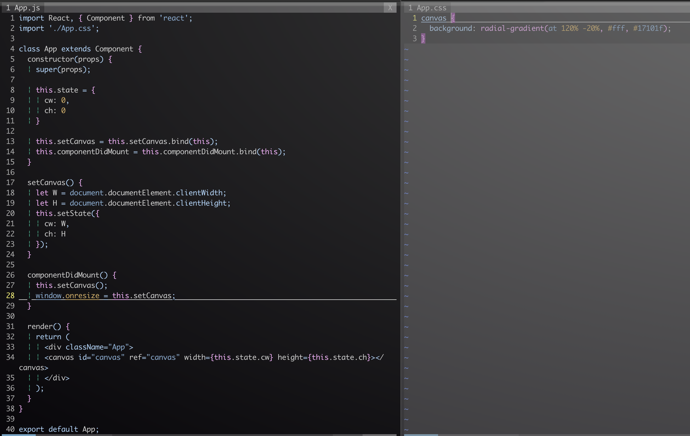<br>这一步很简单没有什么需要说的。</p>
<h1 id="2、在canvas上画一个花瓣"><a href="#2、在canvas上画一个花瓣" class="headerlink" title="2、在canvas上画一个花瓣"></a>2、在canvas上画一个花瓣</h1><p>创建一个<code>createPetal</code>函数</p>
<figure class="highlight plain"><table><tr><td class="gutter"><pre><span class="line">1</span><br><span class="line">2</span><br><span class="line">3</span><br><span class="line">4</span><br><span class="line">5</span><br><span class="line">6</span><br><span class="line">7</span><br><span class="line">8</span><br><span class="line">9</span><br></pre></td><td class="code"><pre><span class="line">createPetal() &#123;</span><br><span class="line">    let canvas = this.refs[&quot;canvas&quot;];</span><br><span class="line">    let ctx = canvas.getContext(&quot;2d&quot;);</span><br><span class="line">    let img = new Image();</span><br><span class="line">    img.src = require(&quot;./images/petal1.png&quot;);</span><br><span class="line">    img.onload = () =&gt; &#123;</span><br><span class="line">      ctx.drawImage(img, 100, 100);</span><br><span class="line">    &#125;</span><br><span class="line">  &#125;</span><br></pre></td></tr></table></figure>

<p>在<code>componentDidMount</code>调用</p>
<figure class="highlight plain"><table><tr><td class="gutter"><pre><span class="line">1</span><br><span class="line">2</span><br><span class="line">3</span><br><span class="line">4</span><br><span class="line">5</span><br></pre></td><td class="code"><pre><span class="line">componentDidMount() &#123;</span><br><span class="line">    this.setCanvas();</span><br><span class="line">    window.onresize = this.setCanvas;</span><br><span class="line">    this.createPetal();</span><br><span class="line">  &#125;</span><br></pre></td></tr></table></figure>

<p>这样就在<code>100， 100</code>这个位置画了个花瓣<br>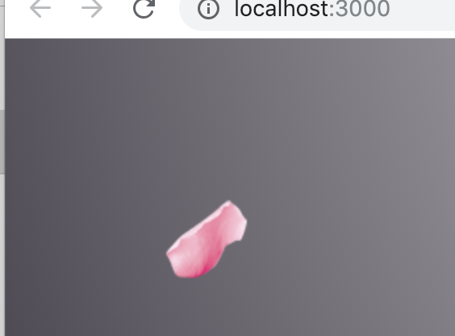</p>
<h1 id="3、让这个花瓣动起来"><a href="#3、让这个花瓣动起来" class="headerlink" title="3、让这个花瓣动起来"></a>3、让这个花瓣动起来</h1><p>canvas动画是高频率刷新，清空上一帧，画下一帧，看起来是动画。<br>了解了动画的原理，接下来就可以开始写动画，首先将坐标放到<code>state</code>中。</p>
<figure class="highlight plain"><table><tr><td class="gutter"><pre><span class="line">1</span><br><span class="line">2</span><br><span class="line">3</span><br><span class="line">4</span><br><span class="line">5</span><br><span class="line">6</span><br></pre></td><td class="code"><pre><span class="line">this.state = &#123;</span><br><span class="line">      cw: 0,</span><br><span class="line">      ch: 0,</span><br><span class="line">      x: 0,</span><br><span class="line">      y: 0</span><br><span class="line">    &#125;</span><br></pre></td></tr></table></figure>

<p>创建一个<code>go</code>函数。</p>
<figure class="highlight plain"><table><tr><td class="gutter"><pre><span class="line">1</span><br><span class="line">2</span><br><span class="line">3</span><br><span class="line">4</span><br><span class="line">5</span><br><span class="line">6</span><br><span class="line">7</span><br><span class="line">8</span><br><span class="line">9</span><br><span class="line">10</span><br><span class="line">11</span><br></pre></td><td class="code"><pre><span class="line">go(ctx, img) &#123;</span><br><span class="line">    ctx.clearRect(0, 0, this.state.cw, this.state.ch);//清空画布</span><br><span class="line">    this.setState(&#123;</span><br><span class="line">      x: this.state.x + 1,</span><br><span class="line">      y: this.state.y + 1</span><br><span class="line">    &#125;);//移动花瓣坐标</span><br><span class="line">    ctx.drawImage(img, this.state.x, this.state.y);</span><br><span class="line">    window.requestAnimationFrame(() =&gt; &#123;</span><br><span class="line">      this.go(ctx, img);</span><br><span class="line">    &#125;);//重复清空画布，移动坐标重新画花瓣这个动作。</span><br><span class="line">  &#125;</span><br></pre></td></tr></table></figure>

<p>在<code>createPetal</code>中调用。</p>
<figure class="highlight plain"><table><tr><td class="gutter"><pre><span class="line">1</span><br><span class="line">2</span><br><span class="line">3</span><br><span class="line">4</span><br><span class="line">5</span><br><span class="line">6</span><br><span class="line">7</span><br><span class="line">8</span><br><span class="line">9</span><br><span class="line">10</span><br></pre></td><td class="code"><pre><span class="line">createPetal() &#123;</span><br><span class="line">    let canvas = this.refs[&quot;canvas&quot;];</span><br><span class="line">    let ctx = canvas.getContext(&quot;2d&quot;);</span><br><span class="line">    let img = new Image();</span><br><span class="line">    img.src = require(&quot;./images/petal1.png&quot;);</span><br><span class="line">    img.onload = () =&gt; &#123;</span><br><span class="line">      ctx.drawImage(img, this.state.x, this.state.y);</span><br><span class="line">      this.go(ctx, img);</span><br><span class="line">    &#125;</span><br><span class="line">  &#125;</span><br></pre></td></tr></table></figure>

<p>接下来可以看到效果。<br><br>录的有点卡，实际上要比这个效果好很多。。。<br>有没有发现问题，花瓣位置超出浏览器之后去哪了打印一下坐标。<br>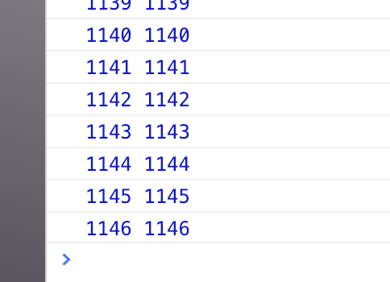<br>可以看到还在继续飘，这不是想要的，所以在坐标超出浏览器之后让它回到初始位置。<br><code>go</code>这个函数修改如下：</p>
<figure class="highlight plain"><table><tr><td class="gutter"><pre><span class="line">1</span><br><span class="line">2</span><br><span class="line">3</span><br><span class="line">4</span><br><span class="line">5</span><br><span class="line">6</span><br><span class="line">7</span><br><span class="line">8</span><br><span class="line">9</span><br><span class="line">10</span><br><span class="line">11</span><br><span class="line">12</span><br><span class="line">13</span><br><span class="line">14</span><br><span class="line">15</span><br><span class="line">16</span><br><span class="line">17</span><br></pre></td><td class="code"><pre><span class="line">go(ctx, img) &#123;</span><br><span class="line">    ctx.clearRect(0, 0, this.state.cw, this.state.ch);//清空画布</span><br><span class="line">    let x = this.state.x + 1;</span><br><span class="line">    let y = this.state.y + 1;</span><br><span class="line">    if (x &gt; this.state.cw || y &gt; this.state.ch) &#123;</span><br><span class="line">      x = 0;</span><br><span class="line">      y = 0;</span><br><span class="line">    &#125;</span><br><span class="line">    this.setState(&#123;</span><br><span class="line">      x,</span><br><span class="line">      y</span><br><span class="line">    &#125;);//移动花瓣坐标</span><br><span class="line">    ctx.drawImage(img, this.state.x, this.state.y);</span><br><span class="line">    window.requestAnimationFrame(() =&gt; &#123;</span><br><span class="line">      this.go(ctx, img);</span><br><span class="line">    &#125;);//重复清空画布，移动坐标重新画花瓣这个动作。</span><br><span class="line">  &#125;</span><br></pre></td></tr></table></figure>

<p>看一下效果<br></p>
<p>这一步实现之后，有没有发现还有问题，要模拟自然飘落，这个花瓣不可能没有旋转，接下来再加上旋转。<br>这个旋转，需要的是画布旋转，旋转画好了之后再复位。<br>在<code>state</code>中加上旋转角度：</p>
<figure class="highlight plain"><table><tr><td class="gutter"><pre><span class="line">1</span><br><span class="line">2</span><br><span class="line">3</span><br><span class="line">4</span><br><span class="line">5</span><br><span class="line">6</span><br><span class="line">7</span><br></pre></td><td class="code"><pre><span class="line">this.state = &#123;</span><br><span class="line">      cw: 0,</span><br><span class="line">      ch: 0,</span><br><span class="line">      x: 0,</span><br><span class="line">      y: 0,</span><br><span class="line">      r: 0   //旋转角度</span><br><span class="line">    &#125;</span><br></pre></td></tr></table></figure>

<p>在<code>go</code>里面加上旋转，并且为了统一动作和计算方便，这里将图片位移改为画布位移，画图坐标相对画布始终在同一位置：</p>
<figure class="highlight plain"><table><tr><td class="gutter"><pre><span class="line">1</span><br><span class="line">2</span><br><span class="line">3</span><br><span class="line">4</span><br><span class="line">5</span><br><span class="line">6</span><br><span class="line">7</span><br><span class="line">8</span><br><span class="line">9</span><br><span class="line">10</span><br><span class="line">11</span><br><span class="line">12</span><br><span class="line">13</span><br><span class="line">14</span><br><span class="line">15</span><br><span class="line">16</span><br><span class="line">17</span><br><span class="line">18</span><br><span class="line">19</span><br><span class="line">20</span><br><span class="line">21</span><br><span class="line">22</span><br><span class="line">23</span><br></pre></td><td class="code"><pre><span class="line">go(ctx, img) &#123;</span><br><span class="line">    ctx.clearRect(0, 0, this.state.cw, this.state.ch);//清空画布</span><br><span class="line">    let x = this.state.x + 1;</span><br><span class="line">    let y = this.state.y + 1;</span><br><span class="line">    let r = this.state.r + 0.1;</span><br><span class="line">    if (x &gt; this.state.cw || y &gt; this.state.ch) &#123;</span><br><span class="line">      x = 0;</span><br><span class="line">      y = 0;</span><br><span class="line">    &#125;</span><br><span class="line">    this.setState(&#123;</span><br><span class="line">      x,</span><br><span class="line">      y,</span><br><span class="line">      r</span><br><span class="line">    &#125;);//移动花瓣坐标</span><br><span class="line">    ctx.save();//保存画布当前状态</span><br><span class="line">    ctx.translate(this.state.x, this.state.y); //改为画布位移</span><br><span class="line">    ctx.rotate(this.state.r);   //画布旋转</span><br><span class="line">    ctx.drawImage(img, 0, 0);  //画图坐标始终在画布左上角</span><br><span class="line">    ctx.restore();</span><br><span class="line">    window.requestAnimationFrame(() =&gt; &#123;</span><br><span class="line">      this.go(ctx, img);</span><br><span class="line">    &#125;);//重复清空画布，移动坐标重新画花瓣这个动作。</span><br><span class="line">  &#125;</span><br></pre></td></tr></table></figure>

<p>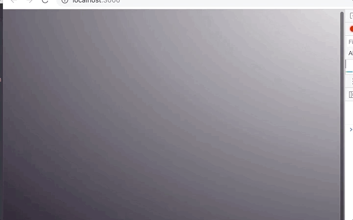<br>和预想的不太一样，这是因为画布默认的旋转中心为左上角，<br>我们需要将旋转中心移到图片的中心。</p>
<figure class="highlight plain"><table><tr><td class="gutter"><pre><span class="line">1</span><br><span class="line">2</span><br><span class="line">3</span><br><span class="line">4</span><br><span class="line">5</span><br><span class="line">6</span><br><span class="line">7</span><br><span class="line">8</span><br><span class="line">9</span><br><span class="line">10</span><br><span class="line">11</span><br><span class="line">12</span><br><span class="line">13</span><br><span class="line">14</span><br><span class="line">15</span><br><span class="line">16</span><br><span class="line">17</span><br><span class="line">18</span><br><span class="line">19</span><br><span class="line">20</span><br><span class="line">21</span><br><span class="line">22</span><br><span class="line">23</span><br><span class="line">24</span><br><span class="line">25</span><br></pre></td><td class="code"><pre><span class="line">go(ctx, img) &#123;</span><br><span class="line">    ctx.clearRect(0, 0, this.state.cw, this.state.ch);//清空画布</span><br><span class="line">    let w = img.width;</span><br><span class="line">    let h = img.height;</span><br><span class="line">    let x = this.state.x + 1;</span><br><span class="line">    let y = this.state.y + 1;</span><br><span class="line">    let r = this.state.r + 0.1;</span><br><span class="line">    if (x &gt; this.state.cw || y &gt; this.state.ch) &#123;</span><br><span class="line">      x = 0;</span><br><span class="line">      y = 0;</span><br><span class="line">    &#125;</span><br><span class="line">    this.setState(&#123;</span><br><span class="line">      x,</span><br><span class="line">      y,</span><br><span class="line">      r</span><br><span class="line">    &#125;);//移动花瓣坐标</span><br><span class="line">    ctx.save();//保存画布当前状态</span><br><span class="line">    ctx.translate(this.state.x + w / 2, this.state.y + h / 2); //改为画布位移</span><br><span class="line">    ctx.rotate(this.state.r);</span><br><span class="line">    ctx.drawImage(img, -w / 2, - h / 2);  //画图坐标始终在画布左上角</span><br><span class="line">    ctx.restore();</span><br><span class="line">    window.requestAnimationFrame(() =&gt; &#123;</span><br><span class="line">      this.go(ctx, img);</span><br><span class="line">    &#125;);//重复清空画布，移动坐标重新画花瓣这个动作。</span><br><span class="line">  &#125;</span><br></pre></td></tr></table></figure>

<p>看一下效果<br><br>旋转是有了，<br>但是好像不太对，只绕Z轴旋转，要让它变成3D旋转，这里要用到缩放<code>scale</code>，缩放这里不可能一直放大或者缩小，所以还要加一个变量控制。</p>
<figure class="highlight plain"><table><tr><td class="gutter"><pre><span class="line">1</span><br><span class="line">2</span><br><span class="line">3</span><br><span class="line">4</span><br><span class="line">5</span><br><span class="line">6</span><br><span class="line">7</span><br><span class="line">8</span><br><span class="line">9</span><br></pre></td><td class="code"><pre><span class="line">this.state = &#123;</span><br><span class="line">      cw: 0,</span><br><span class="line">      ch: 0,</span><br><span class="line">      x: 0,</span><br><span class="line">      y: 0,</span><br><span class="line">      r: 0,</span><br><span class="line">      scale: 1,</span><br><span class="line">      toLarge: true</span><br><span class="line">    &#125;</span><br></pre></td></tr></table></figure>

<p>接下来将<code>go</code>改一下，加上<code>scale</code>并且旋转速度调整一下：</p>
<figure class="highlight plain"><table><tr><td class="gutter"><pre><span class="line">1</span><br><span class="line">2</span><br><span class="line">3</span><br><span class="line">4</span><br><span class="line">5</span><br><span class="line">6</span><br><span class="line">7</span><br><span class="line">8</span><br><span class="line">9</span><br><span class="line">10</span><br><span class="line">11</span><br><span class="line">12</span><br><span class="line">13</span><br><span class="line">14</span><br><span class="line">15</span><br><span class="line">16</span><br><span class="line">17</span><br><span class="line">18</span><br><span class="line">19</span><br><span class="line">20</span><br><span class="line">21</span><br><span class="line">22</span><br><span class="line">23</span><br><span class="line">24</span><br><span class="line">25</span><br><span class="line">26</span><br><span class="line">27</span><br><span class="line">28</span><br><span class="line">29</span><br><span class="line">30</span><br><span class="line">31</span><br><span class="line">32</span><br><span class="line">33</span><br><span class="line">34</span><br><span class="line">35</span><br><span class="line">36</span><br><span class="line">37</span><br><span class="line">38</span><br><span class="line">39</span><br><span class="line">40</span><br><span class="line">41</span><br><span class="line">42</span><br></pre></td><td class="code"><pre><span class="line">go(ctx, img) &#123;</span><br><span class="line">    ctx.clearRect(0, 0, this.state.cw, this.state.ch);//清空画布</span><br><span class="line">    let w = img.width;</span><br><span class="line">    let h = img.height;</span><br><span class="line">    let x = this.state.x + 1;</span><br><span class="line">    let y = this.state.y + 1;</span><br><span class="line">    let r = this.state.r + 0.05;</span><br><span class="line">    let scale = this.state.scale;</span><br><span class="line">    let toLarge = this.state.toLarge;</span><br><span class="line"></span><br><span class="line">    if (scale &gt;= 1) &#123;</span><br><span class="line">      toLarge = false;</span><br><span class="line">    &#125; else if (scale &lt;= 0) &#123;</span><br><span class="line">      toLarge = true;</span><br><span class="line">    &#125;//这里根据scale大小设置toLarge</span><br><span class="line"></span><br><span class="line">    if (toLarge) &#123;</span><br><span class="line">      scale += 0.01;</span><br><span class="line">    &#125; else &#123;</span><br><span class="line">      scale -= 0.01;</span><br><span class="line">    &#125;//这里根据toLarge更改scale值</span><br><span class="line">    if (x &gt; this.state.cw || y &gt; this.state.ch) &#123;</span><br><span class="line">      x = 0;</span><br><span class="line">      y = 0;</span><br><span class="line">    &#125;</span><br><span class="line">    this.setState(&#123;</span><br><span class="line">      x,</span><br><span class="line">      y,</span><br><span class="line">      r,</span><br><span class="line">      scale,</span><br><span class="line">      toLarge</span><br><span class="line">    &#125;);//移动花瓣坐标</span><br><span class="line">    ctx.save();//保存画布当前状态</span><br><span class="line">    ctx.translate(this.state.x + w / 2, this.state.y + h / 2); //改为画布位移</span><br><span class="line">    ctx.rotate(this.state.r);</span><br><span class="line">    ctx.scale(1, this.state.scale);</span><br><span class="line">    ctx.drawImage(img, -w / 2, - h / 2);  //画图坐标始终在画布左上角</span><br><span class="line">    ctx.restore();</span><br><span class="line">    window.requestAnimationFrame(() =&gt; &#123;</span><br><span class="line">      this.go(ctx, img);</span><br><span class="line">    &#125;);//重复清空画布，移动坐标重新画花瓣这个动作。</span><br><span class="line">  &#125;</span><br></pre></td></tr></table></figure>

<p>看一下效果<br><br>至此一个花瓣就写完了。<br>但是我们想要的是很多个花瓣同时飘。<br>这就需要一个花瓣的类。</p>
<h1 id="4、创建一个花瓣的class"><a href="#4、创建一个花瓣的class" class="headerlink" title="4、创建一个花瓣的class"></a>4、创建一个花瓣的class</h1><p>新建一个<code>petal.js</code></p>
<figure class="highlight plain"><table><tr><td class="gutter"><pre><span class="line">1</span><br><span class="line">2</span><br><span class="line">3</span><br><span class="line">4</span><br><span class="line">5</span><br><span class="line">6</span><br><span class="line">7</span><br><span class="line">8</span><br><span class="line">9</span><br><span class="line">10</span><br><span class="line">11</span><br><span class="line">12</span><br><span class="line">13</span><br><span class="line">14</span><br><span class="line">15</span><br><span class="line">16</span><br><span class="line">17</span><br><span class="line">18</span><br><span class="line">19</span><br><span class="line">20</span><br><span class="line">21</span><br><span class="line">22</span><br><span class="line">23</span><br><span class="line">24</span><br><span class="line">25</span><br><span class="line">26</span><br><span class="line">27</span><br><span class="line">28</span><br><span class="line">29</span><br><span class="line">30</span><br><span class="line">31</span><br><span class="line">32</span><br><span class="line">33</span><br><span class="line">34</span><br><span class="line">35</span><br><span class="line">36</span><br><span class="line">37</span><br><span class="line">38</span><br><span class="line">39</span><br><span class="line">40</span><br><span class="line">41</span><br><span class="line">42</span><br><span class="line">43</span><br><span class="line">44</span><br><span class="line">45</span><br><span class="line">46</span><br><span class="line">47</span><br><span class="line">48</span><br><span class="line">49</span><br><span class="line">50</span><br><span class="line">51</span><br><span class="line">52</span><br><span class="line">53</span><br><span class="line">54</span><br><span class="line">55</span><br><span class="line">56</span><br><span class="line">57</span><br><span class="line">58</span><br><span class="line">59</span><br><span class="line">60</span><br></pre></td><td class="code"><pre><span class="line">export default class Petal &#123;</span><br><span class="line">  constructor(w, h) &#123;</span><br><span class="line">    this.canvasW = w;  //canvas宽</span><br><span class="line">    this.canvasH = h;  //canvas高</span><br><span class="line">    this.w = 0;        //花瓣宽</span><br><span class="line">    this.h = 0;        //花瓣高</span><br><span class="line">    this.x = 0;        //初始x坐标</span><br><span class="line">    this.y = 0;        //初始y坐标</span><br><span class="line">    this.r = 0;        //初始旋转角度</span><br><span class="line">    this.scale = 1;    //初始缩放</span><br><span class="line">    this.toLarge = false;   //默认放大为false</span><br><span class="line">    this.speedX = 1;   //x方向速度</span><br><span class="line">    this.speedY = 1;   //y方向速度</span><br><span class="line">    this.speedScale= 0.01  //缩放速度</span><br><span class="line">    this.speedR = 0.05    //旋转速度</span><br><span class="line">  &#125;</span><br><span class="line">  //数据初始化，用于当花瓣超出浏览器可视区时重置位置</span><br><span class="line">  init() &#123;</span><br><span class="line">    this.x = 0;</span><br><span class="line">    this.y = 0;</span><br><span class="line">    this.r = 0;</span><br><span class="line">    this.scale = 1;</span><br><span class="line">    this.speedX = 1;</span><br><span class="line">    this.speedY = 1;</span><br><span class="line">    this.speedScale = 0.01;</span><br><span class="line">    this.speedR = 0.05;</span><br><span class="line">  &#125;</span><br><span class="line">  //画布位移、画图、画布复位</span><br><span class="line">  draw(ctx, img) &#123;</span><br><span class="line">    this.w = img.width;</span><br><span class="line">    this.h = img.height;</span><br><span class="line">    ctx.save();     //保存当前画布状态</span><br><span class="line">    ctx.translate(this.x + this.w / 2,  this.y + this.h / 2);  //画布位移</span><br><span class="line">    ctx.rotate(this.r);   //画布旋转</span><br><span class="line">    ctx.scale(1, this.scale);  //画布缩放</span><br><span class="line">    ctx.drawImage(img, -this.w / 2, -this.h / 2);   //画图</span><br><span class="line">    ctx.restore();    //画布复位</span><br><span class="line">  &#125;</span><br><span class="line">  //计算坐标</span><br><span class="line">  move() &#123;</span><br><span class="line">    this.x += this.speedX;</span><br><span class="line">    this.y += this.speedY;</span><br><span class="line">    this.r += this.speedR;</span><br><span class="line">    if (this.scale &gt;= 1) &#123;</span><br><span class="line">      this.toLarge = false;</span><br><span class="line">    &#125; else if (this.scale &lt;= 0) &#123;</span><br><span class="line">      this.toLarge = true;</span><br><span class="line">    &#125;</span><br><span class="line"></span><br><span class="line">    if (this.toLarge) &#123;</span><br><span class="line">      this.scale += this.speedScale;</span><br><span class="line">    &#125; else &#123;</span><br><span class="line">      this.scale -= this.speedScale;</span><br><span class="line">    &#125;</span><br><span class="line"></span><br><span class="line">    if (this.x &gt;= this.canvasW || this.y &gt;= this.canvasH) &#123;</span><br><span class="line">      this.init();</span><br><span class="line">    &#125;</span><br><span class="line">  &#125;</span><br><span class="line">&#125;</span><br></pre></td></tr></table></figure>

<p>在<code>App.js</code>内引入并new一个花瓣，打印一下；</p>
<figure class="highlight plain"><table><tr><td class="gutter"><pre><span class="line">1</span><br><span class="line">2</span><br><span class="line">3</span><br><span class="line">4</span><br><span class="line">5</span><br><span class="line">6</span><br><span class="line">7</span><br><span class="line">8</span><br><span class="line">9</span><br><span class="line">10</span><br><span class="line">11</span><br><span class="line">12</span><br><span class="line">13</span><br><span class="line">14</span><br><span class="line">15</span><br><span class="line">16</span><br><span class="line">17</span><br><span class="line">18</span><br><span class="line">19</span><br><span class="line">20</span><br><span class="line">21</span><br><span class="line">22</span><br><span class="line">23</span><br><span class="line">24</span><br><span class="line">25</span><br><span class="line">26</span><br><span class="line">27</span><br><span class="line">28</span><br><span class="line">29</span><br><span class="line">30</span><br><span class="line">31</span><br><span class="line">32</span><br><span class="line">33</span><br><span class="line">34</span><br><span class="line">35</span><br><span class="line">36</span><br><span class="line">37</span><br><span class="line">38</span><br><span class="line">39</span><br><span class="line">40</span><br><span class="line">41</span><br><span class="line">42</span><br><span class="line">43</span><br><span class="line">44</span><br><span class="line">45</span><br><span class="line">46</span><br><span class="line">47</span><br><span class="line">48</span><br><span class="line">49</span><br><span class="line">50</span><br><span class="line">51</span><br><span class="line">52</span><br><span class="line">53</span><br><span class="line">54</span><br><span class="line">55</span><br><span class="line">56</span><br><span class="line">57</span><br><span class="line">58</span><br><span class="line">59</span><br><span class="line">60</span><br><span class="line">61</span><br><span class="line">62</span><br><span class="line">63</span><br><span class="line">64</span><br><span class="line">65</span><br><span class="line">66</span><br><span class="line">67</span><br><span class="line">68</span><br><span class="line">69</span><br><span class="line">70</span><br><span class="line">71</span><br><span class="line">72</span><br><span class="line">73</span><br><span class="line">74</span><br><span class="line">75</span><br><span class="line">76</span><br><span class="line">77</span><br><span class="line">78</span><br><span class="line">79</span><br><span class="line">80</span><br><span class="line">81</span><br><span class="line">82</span><br><span class="line">83</span><br><span class="line">84</span><br><span class="line">85</span><br><span class="line">86</span><br><span class="line">87</span><br><span class="line">88</span><br><span class="line">89</span><br><span class="line">90</span><br><span class="line">91</span><br><span class="line">92</span><br><span class="line">93</span><br><span class="line">94</span><br><span class="line">95</span><br><span class="line">96</span><br><span class="line">97</span><br><span class="line">98</span><br><span class="line">99</span><br><span class="line">100</span><br><span class="line">101</span><br><span class="line">102</span><br><span class="line">103</span><br><span class="line">104</span><br><span class="line">105</span><br></pre></td><td class="code"><pre><span class="line">import React, &#123; Component &#125; from &apos;react&apos;;</span><br><span class="line">import &apos;./App.css&apos;;</span><br><span class="line">import Petal from &apos;./petal&apos;;</span><br><span class="line"></span><br><span class="line">class App extends Component &#123;</span><br><span class="line">  constructor(props) &#123;</span><br><span class="line">    super(props);</span><br><span class="line"></span><br><span class="line">    this.state = &#123;</span><br><span class="line">      cw: 0,</span><br><span class="line">      ch: 0,</span><br><span class="line">      x: 0,</span><br><span class="line">      y: 0,</span><br><span class="line">      r: 0,</span><br><span class="line">      scale: 1,</span><br><span class="line">      toLarge: true</span><br><span class="line">    &#125;</span><br><span class="line"></span><br><span class="line">    this.setCanvas = this.setCanvas.bind(this);</span><br><span class="line">    this.componentDidMount = this.componentDidMount.bind(this);</span><br><span class="line">    this.createPetal = this.createPetal.bind(this);</span><br><span class="line">    this.go = this.go.bind(this);</span><br><span class="line">  &#125;</span><br><span class="line"></span><br><span class="line">  setCanvas() &#123;</span><br><span class="line">    let W = document.documentElement.clientWidth;</span><br><span class="line">    let H = document.documentElement.clientHeight;</span><br><span class="line">    this.setState(&#123;</span><br><span class="line">      cw: W,</span><br><span class="line">      ch: H</span><br><span class="line">    &#125;);</span><br><span class="line">  &#125;</span><br><span class="line"></span><br><span class="line">  createPetal() &#123;</span><br><span class="line">    let canvas = this.refs[&quot;canvas&quot;];</span><br><span class="line">    let ctx = canvas.getContext(&quot;2d&quot;);</span><br><span class="line">    let img = new Image();</span><br><span class="line">    img.src = require(&quot;./images/petal1.png&quot;);</span><br><span class="line">    img.onload = () =&gt; &#123;</span><br><span class="line">      //ctx.drawImage(img, this.state.x, this.state.y);</span><br><span class="line">      // this.go(ctx, img);</span><br><span class="line">      let petal = new Petal(this.state.cw, this.state.ch);</span><br><span class="line">      console.log(petal);</span><br><span class="line">    &#125;</span><br><span class="line">  &#125;</span><br><span class="line"></span><br><span class="line">  go(ctx, img) &#123;</span><br><span class="line">    ctx.clearRect(0, 0, this.state.cw, this.state.ch);//清空画布</span><br><span class="line">    let w = img.width;</span><br><span class="line">    let h = img.height;</span><br><span class="line">    let x = this.state.x + 1;</span><br><span class="line">    let y = this.state.y + 1;</span><br><span class="line">    let r = this.state.r + 0.05;</span><br><span class="line">    let scale = this.state.scale;</span><br><span class="line">    let toLarge = this.state.toLarge;</span><br><span class="line"></span><br><span class="line">    if (scale &gt;= 1) &#123;</span><br><span class="line">      toLarge = false;</span><br><span class="line">    &#125; else if (scale &lt;= 0) &#123;</span><br><span class="line">      toLarge = true;</span><br><span class="line">    &#125;</span><br><span class="line"></span><br><span class="line">    if (toLarge) &#123;</span><br><span class="line">      scale += 0.01;</span><br><span class="line">    &#125; else &#123;</span><br><span class="line">      scale -= 0.01;</span><br><span class="line">    &#125;</span><br><span class="line">    if (x &gt; this.state.cw || y &gt; this.state.ch) &#123;</span><br><span class="line">      x = 0;</span><br><span class="line">      y = 0;</span><br><span class="line">    &#125;</span><br><span class="line">    this.setState(&#123;</span><br><span class="line">      x,</span><br><span class="line">      y,</span><br><span class="line">      r,</span><br><span class="line">      scale,</span><br><span class="line">      toLarge</span><br><span class="line">    &#125;);//移动花瓣坐标</span><br><span class="line">    ctx.save();//保存画布当前状态</span><br><span class="line">    ctx.translate(this.state.x + w / 2, this.state.y + h / 2); //改为画布位移</span><br><span class="line">    ctx.rotate(this.state.r);</span><br><span class="line">    ctx.scale(1, this.state.scale);</span><br><span class="line">    ctx.drawImage(img, -w / 2, - h / 2);  //画图坐标始终在画布左上角</span><br><span class="line">    ctx.restore();</span><br><span class="line">    window.requestAnimationFrame(() =&gt; &#123;</span><br><span class="line">      this.go(ctx, img);</span><br><span class="line">    &#125;);//重复清空画布，移动坐标重新画花瓣这个动作。</span><br><span class="line">  &#125;</span><br><span class="line"></span><br><span class="line">  componentDidMount() &#123;</span><br><span class="line">    this.setCanvas();</span><br><span class="line">    window.onresize = this.setCanvas;</span><br><span class="line">    this.createPetal();</span><br><span class="line">  &#125;</span><br><span class="line"></span><br><span class="line">  render() &#123;</span><br><span class="line">    return (</span><br><span class="line">      &lt;div className=&quot;App&quot;&gt;</span><br><span class="line">      &lt;canvas id=&quot;canvas&quot; ref=&quot;canvas&quot; width=&#123;this.state.cw&#125; height=&#123;this.state.ch&#125;&gt;&lt;/canvas&gt;</span><br><span class="line">      &lt;/div&gt;</span><br><span class="line">    );</span><br><span class="line">  &#125;</span><br><span class="line">&#125;</span><br><span class="line"></span><br><span class="line">export default App;</span><br></pre></td></tr></table></figure>

<p>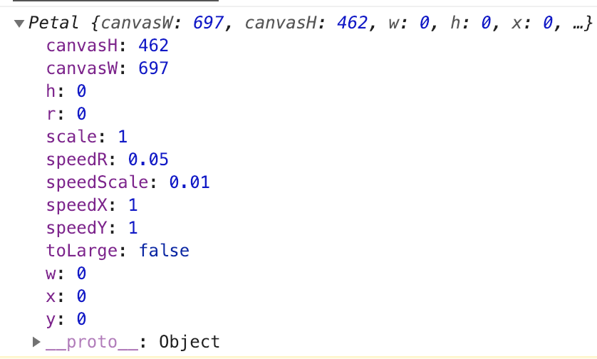<br>可以看见已经创建了一个初始的花瓣，暂时还没有画图片。<br>接下来就是把之前的go改一下，画上花瓣并动起来。<br><code>App.js</code>更改后如下：</p>
<figure class="highlight plain"><table><tr><td class="gutter"><pre><span class="line">1</span><br><span class="line">2</span><br><span class="line">3</span><br><span class="line">4</span><br><span class="line">5</span><br><span class="line">6</span><br><span class="line">7</span><br><span class="line">8</span><br><span class="line">9</span><br><span class="line">10</span><br><span class="line">11</span><br><span class="line">12</span><br><span class="line">13</span><br><span class="line">14</span><br><span class="line">15</span><br><span class="line">16</span><br><span class="line">17</span><br><span class="line">18</span><br><span class="line">19</span><br><span class="line">20</span><br><span class="line">21</span><br><span class="line">22</span><br><span class="line">23</span><br><span class="line">24</span><br><span class="line">25</span><br><span class="line">26</span><br><span class="line">27</span><br><span class="line">28</span><br><span class="line">29</span><br><span class="line">30</span><br><span class="line">31</span><br><span class="line">32</span><br><span class="line">33</span><br><span class="line">34</span><br><span class="line">35</span><br><span class="line">36</span><br><span class="line">37</span><br><span class="line">38</span><br><span class="line">39</span><br><span class="line">40</span><br><span class="line">41</span><br><span class="line">42</span><br><span class="line">43</span><br><span class="line">44</span><br><span class="line">45</span><br><span class="line">46</span><br><span class="line">47</span><br><span class="line">48</span><br><span class="line">49</span><br><span class="line">50</span><br><span class="line">51</span><br><span class="line">52</span><br><span class="line">53</span><br><span class="line">54</span><br><span class="line">55</span><br><span class="line">56</span><br><span class="line">57</span><br><span class="line">58</span><br><span class="line">59</span><br><span class="line">60</span><br><span class="line">61</span><br><span class="line">62</span><br><span class="line">63</span><br><span class="line">64</span><br><span class="line">65</span><br><span class="line">66</span><br><span class="line">67</span><br><span class="line">68</span><br><span class="line">69</span><br><span class="line">70</span><br></pre></td><td class="code"><pre><span class="line">import React, &#123; Component &#125; from &apos;react&apos;;</span><br><span class="line">import &apos;./App.css&apos;;</span><br><span class="line">import Petal from &apos;./petal&apos;;</span><br><span class="line"></span><br><span class="line">class App extends Component &#123;</span><br><span class="line">  constructor(props) &#123;</span><br><span class="line">    super(props);</span><br><span class="line"></span><br><span class="line">    this.state = &#123;</span><br><span class="line">      cw: 0,</span><br><span class="line">      ch: 0</span><br><span class="line">    &#125;</span><br><span class="line"></span><br><span class="line">    this.setCanvas = this.setCanvas.bind(this);</span><br><span class="line">    this.componentDidMount = this.componentDidMount.bind(this);</span><br><span class="line">    this.createPetal = this.createPetal.bind(this);</span><br><span class="line">    this.go = this.go.bind(this);</span><br><span class="line">  &#125;</span><br><span class="line"></span><br><span class="line">  setCanvas() &#123;</span><br><span class="line">    let W = document.documentElement.clientWidth;</span><br><span class="line">    let H = document.documentElement.clientHeight;</span><br><span class="line">    this.setState(&#123;</span><br><span class="line">      cw: W,</span><br><span class="line">      ch: H</span><br><span class="line">    &#125;);</span><br><span class="line">  &#125;</span><br><span class="line"></span><br><span class="line">  createPetal() &#123;</span><br><span class="line">    let canvas = this.refs[&quot;canvas&quot;];</span><br><span class="line">    let ctx = canvas.getContext(&quot;2d&quot;);</span><br><span class="line">    let img = new Image();</span><br><span class="line">    img.src = require(&quot;./images/petal1.png&quot;);</span><br><span class="line">    img.onload = () =&gt; &#123;</span><br><span class="line">      let petal = new Petal(this.state.cw, this.state.ch);</span><br><span class="line">      this.go(ctx, petal, img);</span><br><span class="line">    &#125;</span><br><span class="line">  &#125;</span><br><span class="line"></span><br><span class="line">  go(ctx, petal, img) &#123;</span><br><span class="line">    let W = this.state.cw;</span><br><span class="line">    let H = this.state.ch;</span><br><span class="line">    //浏览器窗口改变大小时同步更新petal的cnavas宽高值，与花瓣坐标对比判断是否在可视区内</span><br><span class="line">    petal.canvasW = W;</span><br><span class="line">    petal.canvasH = H;</span><br><span class="line">    ctx.clearRect(0, 0, this.state.cw, this.state.ch);//清空画布</span><br><span class="line">    petal.move();</span><br><span class="line">    petal.draw(ctx, img);</span><br><span class="line"></span><br><span class="line">    window.requestAnimationFrame(() =&gt; &#123;</span><br><span class="line">      this.go(ctx, petal, img);</span><br><span class="line">    &#125;);//重复清空画布，移动坐标重新画花瓣这个动作。</span><br><span class="line">  &#125;</span><br><span class="line"></span><br><span class="line">  componentDidMount() &#123;</span><br><span class="line">    this.setCanvas();</span><br><span class="line">    window.onresize = this.setCanvas;</span><br><span class="line">    this.createPetal();</span><br><span class="line">  &#125;</span><br><span class="line"></span><br><span class="line">  render() &#123;</span><br><span class="line">    return (</span><br><span class="line">      &lt;div className=&quot;App&quot;&gt;</span><br><span class="line">      &lt;canvas id=&quot;canvas&quot; ref=&quot;canvas&quot; width=&#123;this.state.cw&#125; height=&#123;this.state.ch&#125;&gt;&lt;/canvas&gt;</span><br><span class="line">      &lt;/div&gt;</span><br><span class="line">    );</span><br><span class="line">  &#125;</span><br><span class="line">&#125;</span><br><span class="line"></span><br><span class="line">export default App;</span><br></pre></td></tr></table></figure>

<h1 id="5、很多花瓣"><a href="#5、很多花瓣" class="headerlink" title="5、很多花瓣"></a>5、很多花瓣</h1><p>一个花瓣已经完成了，接下来就是很多个花瓣。<br>这里涉及到几个点：<br>1、img的src不能用变量，所以要用字符串拼接变量的形式。<br>2、一个花瓣用了onload，很多花瓣很明显一个onload已经不能满足了，这里用<code>promise.all</code>。<br>3、创建很多花瓣，并不是每次<code>drawImage</code>都需要<code>clearRect</code>，需要在第0个画之前清空canvas。<br>4、关于初始坐标和初始速度，很多个花瓣就需要随机坐标和随机速度，而且初始化所在的区域需要计算，否则会出现花瓣位移过程中不经过浏览器可视区或者分布不均。</p>
<h5 id="img的src"><a href="#img的src" class="headerlink" title="img的src"></a>img的src</h5><p>在<code>state</code>里加上花瓣数组，这里不能带后缀。</p>
<figure class="highlight plain"><table><tr><td class="gutter"><pre><span class="line">1</span><br><span class="line">2</span><br><span class="line">3</span><br><span class="line">4</span><br><span class="line">5</span><br><span class="line">6</span><br><span class="line">7</span><br><span class="line">8</span><br><span class="line">9</span><br><span class="line">10</span><br><span class="line">11</span><br><span class="line">12</span><br><span class="line">13</span><br><span class="line">14</span><br><span class="line">15</span><br></pre></td><td class="code"><pre><span class="line">this.state = &#123;</span><br><span class="line">      cw: 0,</span><br><span class="line">      ch: 0,</span><br><span class="line">      n: 60,   //所要创建的花瓣数量</span><br><span class="line">      imgnames: [</span><br><span class="line">        &quot;petal1&quot;,</span><br><span class="line">        &quot;petal2&quot;,</span><br><span class="line">        &quot;petal3&quot;,</span><br><span class="line">        &quot;petal4&quot;,</span><br><span class="line">        &quot;petal5&quot;,</span><br><span class="line">        &quot;petal6&quot;,</span><br><span class="line">        &quot;petal7&quot;,</span><br><span class="line">        &quot;petal8&quot;</span><br><span class="line">      ]</span><br><span class="line">    &#125;</span><br></pre></td></tr></table></figure>

<p><code>createPetal</code>函数改一下，创建多个img：</p>
<figure class="highlight plain"><table><tr><td class="gutter"><pre><span class="line">1</span><br><span class="line">2</span><br><span class="line">3</span><br><span class="line">4</span><br><span class="line">5</span><br><span class="line">6</span><br><span class="line">7</span><br><span class="line">8</span><br><span class="line">9</span><br><span class="line">10</span><br><span class="line">11</span><br><span class="line">12</span><br><span class="line">13</span><br><span class="line">14</span><br><span class="line">15</span><br><span class="line">16</span><br><span class="line">17</span><br><span class="line">18</span><br></pre></td><td class="code"><pre><span class="line">createPetal() &#123;</span><br><span class="line">    let canvas = this.refs[&quot;canvas&quot;];</span><br><span class="line">    let ctx = canvas.getContext(&quot;2d&quot;);</span><br><span class="line">    // let img = new Image();</span><br><span class="line">    // img.src = require(&quot;./images/petal1.png&quot;);</span><br><span class="line">    let totalNum = this.state.imgnames.length; //图片的总数量</span><br><span class="line">    for (let i = 0; i &lt; this.state.n; i++) &#123;</span><br><span class="line">      let imgname = this.state.imgnames[i % totalNum];</span><br><span class="line">      let img = new Image();</span><br><span class="line">      img.src = require(`./images/$&#123;imgname&#125;.png`);</span><br><span class="line">      console.log(img)</span><br><span class="line">    &#125;</span><br><span class="line"></span><br><span class="line">    // img.onload = () =&gt; &#123;</span><br><span class="line">      // let petal = new Petal(this.state.cw, this.state.ch);</span><br><span class="line">      // this.go(ctx, petal, img);</span><br><span class="line">    // &#125;</span><br><span class="line">  &#125;</span><br></pre></td></tr></table></figure>

<p>打印出60个img，src为base64；</p>
<h5 id="所有图片onload"><a href="#所有图片onload" class="headerlink" title="所有图片onload"></a>所有图片onload</h5><p>这里把单个img的load封装为<code>promise</code>，添加到一个数组里，然后用<code>promise.all</code><br>新建一个<code>imgLoad</code>函数，返回一个load的<code>promise</code>;<br>新建一个allImgLoad函数，用于返回一个<code>promise.all</code>。</p>
<figure class="highlight plain"><table><tr><td class="gutter"><pre><span class="line">1</span><br><span class="line">2</span><br><span class="line">3</span><br><span class="line">4</span><br><span class="line">5</span><br><span class="line">6</span><br><span class="line">7</span><br><span class="line">8</span><br><span class="line">9</span><br><span class="line">10</span><br><span class="line">11</span><br><span class="line">12</span><br><span class="line">13</span><br><span class="line">14</span><br><span class="line">15</span><br><span class="line">16</span><br><span class="line">17</span><br><span class="line">18</span><br><span class="line">19</span><br><span class="line">20</span><br><span class="line">21</span><br><span class="line">22</span><br><span class="line">23</span><br><span class="line">24</span><br><span class="line">25</span><br><span class="line">26</span><br><span class="line">27</span><br><span class="line">28</span><br><span class="line">29</span><br><span class="line">30</span><br><span class="line">31</span><br><span class="line">32</span><br><span class="line">33</span><br><span class="line">34</span><br><span class="line">35</span><br><span class="line">36</span><br><span class="line">37</span><br><span class="line">38</span><br><span class="line">39</span><br><span class="line">40</span><br></pre></td><td class="code"><pre><span class="line">imgLoad(imgname) &#123;</span><br><span class="line">    return new Promise((resolve, reject) =&gt; &#123;</span><br><span class="line">      try &#123;</span><br><span class="line">        let img = new Image();</span><br><span class="line">        img.src = require(`./images/$&#123;imgname&#125;.png`);</span><br><span class="line">        img.onload = () =&gt; &#123;</span><br><span class="line">          resolve(img);</span><br><span class="line">        &#125;</span><br><span class="line">      &#125; catch(e) &#123;</span><br><span class="line">        reject(e);</span><br><span class="line">      &#125;</span><br><span class="line">    &#125;);</span><br><span class="line">  &#125;</span><br><span class="line"></span><br><span class="line">  allImgLoad(imgnames) &#123;</span><br><span class="line">    let p = [];</span><br><span class="line">    for(let i = 0; i &lt; imgnames.length; i++) &#123;</span><br><span class="line">      p.push(this.imgLoad(imgnames[i]));</span><br><span class="line">    &#125;</span><br><span class="line">    return Promise.all(p).then(res =&gt; &#123;</span><br><span class="line">      return res;</span><br><span class="line">    &#125;).catch((e) =&gt; &#123;</span><br><span class="line">      console.log(e);</span><br><span class="line">    &#125;);</span><br><span class="line">  &#125;</span><br><span class="line"></span><br><span class="line">  async createPetal() &#123;</span><br><span class="line">    let canvas = this.refs[&quot;canvas&quot;];</span><br><span class="line">    let ctx = canvas.getContext(&quot;2d&quot;);</span><br><span class="line">    // let img = new Image();</span><br><span class="line">    // img.src = require(&quot;./images/petal1.png&quot;);</span><br><span class="line">    let imgnames = [];</span><br><span class="line">    let totalNum = this.state.imgnames.length; //图片的总数量</span><br><span class="line">    for (let i = 0; i &lt; this.state.n; i++) &#123;</span><br><span class="line">      let imgname = this.state.imgnames[i % totalNum];</span><br><span class="line">      imgnames.push(imgname);</span><br><span class="line">    &#125;</span><br><span class="line">    let imgs = await this.allImgLoad(imgnames);</span><br><span class="line">    console.log(imgs)</span><br><span class="line">  &#125;</span><br></pre></td></tr></table></figure>

<p>可以看到打印出了60个img<br>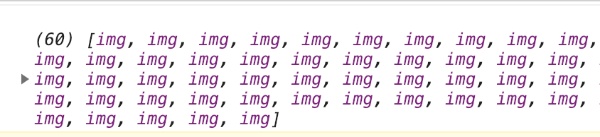</p>
<h5 id="很多花瓣"><a href="#很多花瓣" class="headerlink" title="很多花瓣"></a>很多花瓣</h5><p>每一帧画60个花瓣，并且在第0个画之前清空画布，如果每画一个都清空一次，会把前59个都清空，画布上只有最后一个。<br>在<code>Petal</code>类里边的<code>move</code>和<code>init</code>用异步，加个<code>async</code>，否则会出现有的花瓣跳帧或者init的时候花瓣突然出现在屏幕上。</p>
<figure class="highlight plain"><table><tr><td class="gutter"><pre><span class="line">1</span><br><span class="line">2</span><br><span class="line">3</span><br><span class="line">4</span><br><span class="line">5</span><br><span class="line">6</span><br><span class="line">7</span><br><span class="line">8</span><br><span class="line">9</span><br><span class="line">10</span><br><span class="line">11</span><br><span class="line">12</span><br><span class="line">13</span><br><span class="line">14</span><br><span class="line">15</span><br><span class="line">16</span><br><span class="line">17</span><br><span class="line">18</span><br><span class="line">19</span><br><span class="line">20</span><br><span class="line">21</span><br><span class="line">22</span><br><span class="line">23</span><br><span class="line">24</span><br><span class="line">25</span><br><span class="line">26</span><br><span class="line">27</span><br><span class="line">28</span><br><span class="line">29</span><br><span class="line">30</span><br><span class="line">31</span><br><span class="line">32</span><br><span class="line">33</span><br><span class="line">34</span><br><span class="line">35</span><br><span class="line">36</span><br><span class="line">37</span><br><span class="line">38</span><br><span class="line">39</span><br><span class="line">40</span><br><span class="line">41</span><br><span class="line">42</span><br><span class="line">43</span><br><span class="line">44</span><br><span class="line">45</span><br><span class="line">46</span><br><span class="line">47</span><br><span class="line">48</span><br><span class="line">49</span><br><span class="line">50</span><br><span class="line">51</span><br><span class="line">52</span><br><span class="line">53</span><br><span class="line">54</span><br><span class="line">55</span><br><span class="line">56</span><br><span class="line">57</span><br><span class="line">58</span><br><span class="line">59</span><br><span class="line">60</span><br></pre></td><td class="code"><pre><span class="line">export default class Petal &#123;</span><br><span class="line">  constructor(w, h) &#123;</span><br><span class="line">    this.canvasW = w;  //canvas宽</span><br><span class="line">    this.canvasH = h;  //canvas高</span><br><span class="line">    this.w = 0;        //花瓣宽</span><br><span class="line">    this.h = 0;        //花瓣高</span><br><span class="line">    this.x = 0;        //初始x坐标</span><br><span class="line">    this.y = 0;        //初始y坐标</span><br><span class="line">    this.r = 0;        //初始旋转角度</span><br><span class="line">    this.scale = 1;    //初始缩放</span><br><span class="line">    this.toLarge = false;   //默认放大为false</span><br><span class="line">    this.speedX = 1;   //x方向速度</span><br><span class="line">    this.speedY = 1;   //y方向速度</span><br><span class="line">    this.speedScale= 0.01  //缩放速度</span><br><span class="line">    this.speedR = 0.05    //旋转速度</span><br><span class="line">  &#125;</span><br><span class="line">  //数据初始化，用于当花瓣超出浏览器可视区时重置位置</span><br><span class="line">  async init() &#123;</span><br><span class="line">    this.x = 0;</span><br><span class="line">    this.y = 0;</span><br><span class="line">    this.r = 0;</span><br><span class="line">    this.scale = 1;</span><br><span class="line">    this.speedX = 1;</span><br><span class="line">    this.speedY = 1;</span><br><span class="line">    this.speedScale = 0.01;</span><br><span class="line">    this.speedR = 0.05;</span><br><span class="line">  &#125;</span><br><span class="line">  //画布位移、画图、画布复位</span><br><span class="line">  draw(ctx, img) &#123;</span><br><span class="line">    this.w = img.width;</span><br><span class="line">    this.h = img.height;</span><br><span class="line">    ctx.save();     //保存当前画布状态</span><br><span class="line">    ctx.translate(this.x + this.w / 2,  this.y + this.h / 2);  //画布位移</span><br><span class="line">    ctx.rotate(this.r);   //画布旋转</span><br><span class="line">    ctx.scale(1, this.scale);  //画布缩放</span><br><span class="line">    ctx.drawImage(img, -this.w / 2, -this.h / 2);   //画图</span><br><span class="line">    ctx.restore();    //画布复位</span><br><span class="line">  &#125;</span><br><span class="line">  //计算坐标</span><br><span class="line">  async move() &#123;</span><br><span class="line">    this.x += this.speedX;</span><br><span class="line">    this.y += this.speedY;</span><br><span class="line">    this.r += this.speedR;</span><br><span class="line">    if (this.scale &gt;= 1) &#123;</span><br><span class="line">      this.toLarge = false;</span><br><span class="line">    &#125; else if (this.scale &lt;= 0) &#123;</span><br><span class="line">      this.toLarge = true;</span><br><span class="line">    &#125;</span><br><span class="line"></span><br><span class="line">    if (this.toLarge) &#123;</span><br><span class="line">      this.scale += this.speedScale;</span><br><span class="line">    &#125; else &#123;</span><br><span class="line">      this.scale -= this.speedScale;</span><br><span class="line">    &#125;</span><br><span class="line"></span><br><span class="line">    if (this.x &gt;= this.canvasW || this.y &gt;= this.canvasH) &#123;</span><br><span class="line">      await this.init();</span><br><span class="line">    &#125;</span><br><span class="line">  &#125;</span><br><span class="line">&#125;</span><br></pre></td></tr></table></figure>

<figure class="highlight plain"><table><tr><td class="gutter"><pre><span class="line">1</span><br><span class="line">2</span><br><span class="line">3</span><br><span class="line">4</span><br><span class="line">5</span><br><span class="line">6</span><br><span class="line">7</span><br><span class="line">8</span><br><span class="line">9</span><br><span class="line">10</span><br><span class="line">11</span><br><span class="line">12</span><br><span class="line">13</span><br><span class="line">14</span><br><span class="line">15</span><br><span class="line">16</span><br><span class="line">17</span><br><span class="line">18</span><br><span class="line">19</span><br><span class="line">20</span><br><span class="line">21</span><br><span class="line">22</span><br><span class="line">23</span><br><span class="line">24</span><br><span class="line">25</span><br><span class="line">26</span><br><span class="line">27</span><br><span class="line">28</span><br><span class="line">29</span><br><span class="line">30</span><br><span class="line">31</span><br><span class="line">32</span><br><span class="line">33</span><br><span class="line">34</span><br><span class="line">35</span><br><span class="line">36</span><br><span class="line">37</span><br><span class="line">38</span><br><span class="line">39</span><br><span class="line">40</span><br><span class="line">41</span><br><span class="line">42</span><br><span class="line">43</span><br><span class="line">44</span><br><span class="line">45</span><br><span class="line">46</span><br><span class="line">47</span><br><span class="line">48</span><br><span class="line">49</span><br><span class="line">50</span><br><span class="line">51</span><br><span class="line">52</span><br><span class="line">53</span><br><span class="line">54</span><br><span class="line">55</span><br><span class="line">56</span><br><span class="line">57</span><br><span class="line">58</span><br><span class="line">59</span><br><span class="line">60</span><br><span class="line">61</span><br><span class="line">62</span><br><span class="line">63</span><br><span class="line">64</span><br><span class="line">65</span><br><span class="line">66</span><br><span class="line">67</span><br><span class="line">68</span><br><span class="line">69</span><br><span class="line">70</span><br><span class="line">71</span><br><span class="line">72</span><br><span class="line">73</span><br><span class="line">74</span><br><span class="line">75</span><br><span class="line">76</span><br><span class="line">77</span><br><span class="line">78</span><br><span class="line">79</span><br><span class="line">80</span><br><span class="line">81</span><br><span class="line">82</span><br><span class="line">83</span><br><span class="line">84</span><br><span class="line">85</span><br><span class="line">86</span><br><span class="line">87</span><br><span class="line">88</span><br><span class="line">89</span><br><span class="line">90</span><br><span class="line">91</span><br><span class="line">92</span><br><span class="line">93</span><br><span class="line">94</span><br><span class="line">95</span><br><span class="line">96</span><br><span class="line">97</span><br><span class="line">98</span><br><span class="line">99</span><br><span class="line">100</span><br><span class="line">101</span><br><span class="line">102</span><br><span class="line">103</span><br><span class="line">104</span><br><span class="line">105</span><br><span class="line">106</span><br><span class="line">107</span><br><span class="line">108</span><br><span class="line">109</span><br><span class="line">110</span><br><span class="line">111</span><br><span class="line">112</span><br><span class="line">113</span><br><span class="line">114</span><br><span class="line">115</span><br><span class="line">116</span><br><span class="line">117</span><br></pre></td><td class="code"><pre><span class="line">import React, &#123; Component &#125; from &apos;react&apos;;</span><br><span class="line">import &apos;./App.css&apos;;</span><br><span class="line">import Petal from &apos;./petal&apos;;</span><br><span class="line"></span><br><span class="line">class App extends Component &#123;</span><br><span class="line">  constructor(props) &#123;</span><br><span class="line">    super(props);</span><br><span class="line"></span><br><span class="line">    this.state = &#123;</span><br><span class="line">      cw: 0,</span><br><span class="line">      ch: 0,</span><br><span class="line">      n: 60,</span><br><span class="line">      imgnames: [</span><br><span class="line">        &quot;petal1&quot;,</span><br><span class="line">        &quot;petal2&quot;,</span><br><span class="line">        &quot;petal3&quot;,</span><br><span class="line">        &quot;petal4&quot;,</span><br><span class="line">        &quot;petal5&quot;,</span><br><span class="line">        &quot;petal6&quot;,</span><br><span class="line">        &quot;petal7&quot;,</span><br><span class="line">        &quot;petal8&quot;</span><br><span class="line">      ]</span><br><span class="line">    &#125;</span><br><span class="line"></span><br><span class="line">    this.setCanvas = this.setCanvas.bind(this);</span><br><span class="line">    this.componentDidMount = this.componentDidMount.bind(this);</span><br><span class="line">    this.createPetal = this.createPetal.bind(this);</span><br><span class="line">    this.go = this.go.bind(this);</span><br><span class="line">    this.imgLoad = this.imgLoad.bind(this);</span><br><span class="line">    this.allImgLoad = this.allImgLoad.bind(this);</span><br><span class="line">  &#125;</span><br><span class="line"></span><br><span class="line">  setCanvas() &#123;</span><br><span class="line">    let W = document.documentElement.clientWidth;</span><br><span class="line">    let H = document.documentElement.clientHeight;</span><br><span class="line">    this.setState(&#123;</span><br><span class="line">      cw: W,</span><br><span class="line">      ch: H</span><br><span class="line">    &#125;);</span><br><span class="line">  &#125;</span><br><span class="line"></span><br><span class="line">  imgLoad(imgname) &#123;</span><br><span class="line">    return new Promise((resolve, reject) =&gt; &#123;</span><br><span class="line">      try &#123;</span><br><span class="line">        let img = new Image();</span><br><span class="line">        img.src = require(`./images/$&#123;imgname&#125;.png`);</span><br><span class="line">        img.onload = () =&gt; &#123;</span><br><span class="line">          resolve(img);</span><br><span class="line">        &#125;</span><br><span class="line">      &#125; catch(e) &#123;</span><br><span class="line">        reject(e);</span><br><span class="line">      &#125;</span><br><span class="line">    &#125;);</span><br><span class="line">  &#125;</span><br><span class="line"></span><br><span class="line">  allImgLoad(imgnames) &#123;</span><br><span class="line">    let p = [];</span><br><span class="line">    for(let i = 0; i &lt; imgnames.length; i++) &#123;</span><br><span class="line">      p.push(this.imgLoad(imgnames[i]));</span><br><span class="line">    &#125;</span><br><span class="line">    return Promise.all(p).then(res =&gt; &#123;</span><br><span class="line">      return res;</span><br><span class="line">    &#125;).catch((e) =&gt; &#123;</span><br><span class="line">      console.log(e);</span><br><span class="line">    &#125;);</span><br><span class="line">  &#125;</span><br><span class="line"></span><br><span class="line">  async createPetal() &#123;</span><br><span class="line">    let canvas = this.refs[&quot;canvas&quot;];</span><br><span class="line">    let ctx = canvas.getContext(&quot;2d&quot;);</span><br><span class="line">    let imgnames = [];</span><br><span class="line">    let totalNum = this.state.imgnames.length; //图片的总数量</span><br><span class="line">    for (let i = 0; i &lt; this.state.n; i++) &#123;</span><br><span class="line">      let imgname = this.state.imgnames[i % totalNum];</span><br><span class="line">      imgnames.push(imgname);</span><br><span class="line">    &#125;</span><br><span class="line">    let imgs = await this.allImgLoad(imgnames);</span><br><span class="line">    if(!imgs) return;</span><br><span class="line">    for(let i = 0; i &lt; imgs.length; i++) &#123;</span><br><span class="line">      let petal = new Petal(canvas.width, canvas.height);</span><br><span class="line">      this.go(ctx, petal, imgs[i], i);</span><br><span class="line">    &#125;</span><br><span class="line">  &#125;</span><br><span class="line"></span><br><span class="line">  async go(ctx, petal, img, index) &#123;</span><br><span class="line">    let W = this.state.cw;</span><br><span class="line">    let H = this.state.ch;</span><br><span class="line">    //浏览器窗口改变大小时同步更新petal的cnavas宽高值，与花瓣坐标对比判断是否在可视区内</span><br><span class="line">    petal.canvasW = W;</span><br><span class="line">    petal.canvasH = H;</span><br><span class="line">    if( index === 0) &#123;</span><br><span class="line">      ctx.clearRect(0, 0, W, H);//清空画布</span><br><span class="line">    &#125;</span><br><span class="line">    await petal.move();</span><br><span class="line">    petal.draw(ctx, img);</span><br><span class="line"></span><br><span class="line">    window.requestAnimationFrame(() =&gt; &#123;</span><br><span class="line">      this.go(ctx, petal, img, index);</span><br><span class="line">    &#125;);//重复清空画布，移动坐标重新画花瓣这个动作。</span><br><span class="line">  &#125;</span><br><span class="line"></span><br><span class="line">  componentDidMount() &#123;</span><br><span class="line">    this.setCanvas();</span><br><span class="line">    window.onresize = this.setCanvas;</span><br><span class="line">    this.createPetal();</span><br><span class="line">  &#125;</span><br><span class="line"></span><br><span class="line">  render() &#123;</span><br><span class="line">    return (</span><br><span class="line">      &lt;div className=&quot;App&quot;&gt;</span><br><span class="line">      &lt;canvas id=&quot;canvas&quot; ref=&quot;canvas&quot; width=&#123;this.state.cw&#125; height=&#123;this.state.ch&#125;&gt;&lt;/canvas&gt;</span><br><span class="line">      &lt;/div&gt;</span><br><span class="line">    );</span><br><span class="line">  &#125;</span><br><span class="line">&#125;</span><br><span class="line"></span><br><span class="line">export default App;</span><br></pre></td></tr></table></figure>

<p>这个时候60个花瓣叠在一起，看一下效果<br></p>
<h5 id="随机初始化"><a href="#随机初始化" class="headerlink" title="随机初始化"></a>随机初始化</h5><p>首先要确定一下花瓣初始化的随机区域，有以下几点要求。<br>1、除了打开页面或者刷新页面，可以出现在浏览器可视区，其他情况下要出现在可视区外，从可视区边缘飘进可视区。<br>2、花瓣移动的路径要经过可视区，并且不会出现在左下角或者右上角只有半个花瓣划过的情况，没有意义。<br>3、分布均匀</p>
<p>接下来就是具体实施，先画个图，便于理解。<br>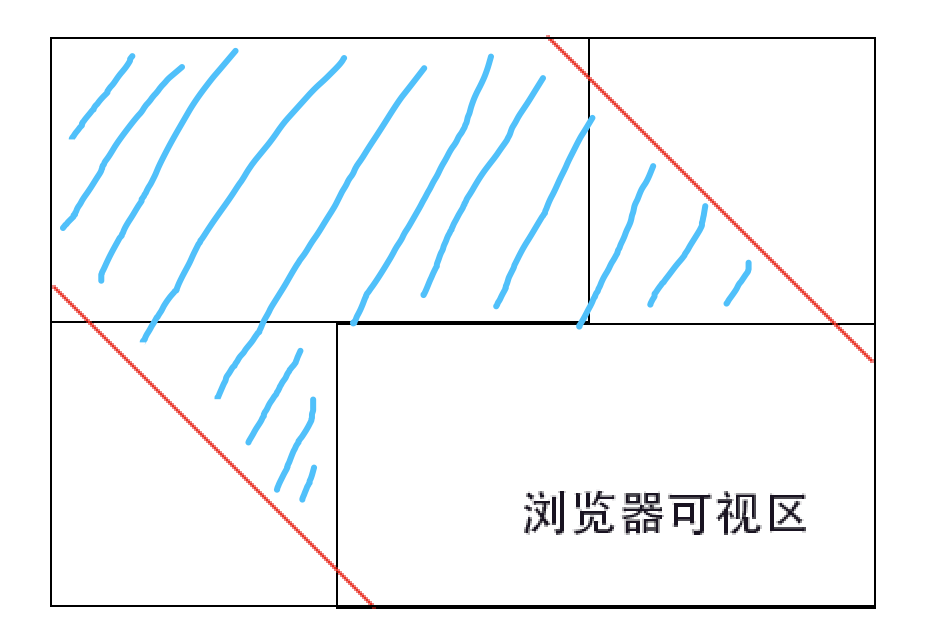</p>
<p>把浏览器45度向左上方平移，我们需要花瓣出现在两条红线之间的区域，并且当花瓣移出浏览器可视区之后，只能出现在蓝色斜线区域。<br>这里花瓣首先随机出现在整个大矩形里，如果出现在想要的区域外，我们做如下处理：<br>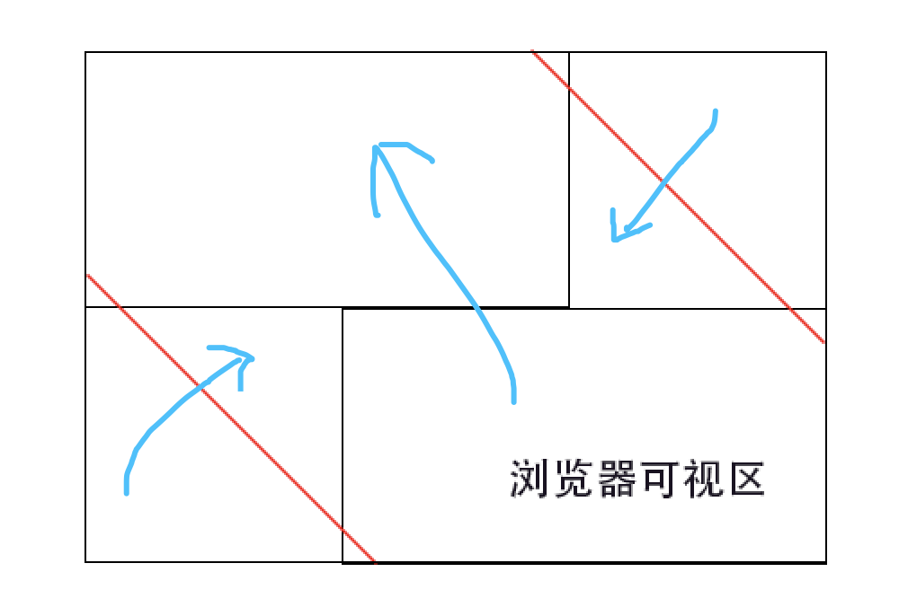<br>这样可以保证所有花瓣都会经过浏览器可视区，左下角和右上角不会出现半个花瓣的情况，并且均匀分布整个浏览器可视区。<br>移动端同理这里就不画图了下面上代码：</p>
<figure class="highlight plain"><table><tr><td class="gutter"><pre><span class="line">1</span><br><span class="line">2</span><br><span class="line">3</span><br><span class="line">4</span><br><span class="line">5</span><br><span class="line">6</span><br><span class="line">7</span><br><span class="line">8</span><br><span class="line">9</span><br><span class="line">10</span><br><span class="line">11</span><br><span class="line">12</span><br><span class="line">13</span><br><span class="line">14</span><br><span class="line">15</span><br><span class="line">16</span><br><span class="line">17</span><br><span class="line">18</span><br><span class="line">19</span><br><span class="line">20</span><br><span class="line">21</span><br><span class="line">22</span><br><span class="line">23</span><br><span class="line">24</span><br><span class="line">25</span><br><span class="line">26</span><br><span class="line">27</span><br><span class="line">28</span><br><span class="line">29</span><br><span class="line">30</span><br><span class="line">31</span><br><span class="line">32</span><br><span class="line">33</span><br><span class="line">34</span><br><span class="line">35</span><br><span class="line">36</span><br><span class="line">37</span><br><span class="line">38</span><br><span class="line">39</span><br><span class="line">40</span><br><span class="line">41</span><br><span class="line">42</span><br><span class="line">43</span><br><span class="line">44</span><br><span class="line">45</span><br><span class="line">46</span><br><span class="line">47</span><br><span class="line">48</span><br><span class="line">49</span><br><span class="line">50</span><br><span class="line">51</span><br><span class="line">52</span><br><span class="line">53</span><br><span class="line">54</span><br><span class="line">55</span><br><span class="line">56</span><br><span class="line">57</span><br><span class="line">58</span><br><span class="line">59</span><br><span class="line">60</span><br><span class="line">61</span><br><span class="line">62</span><br><span class="line">63</span><br><span class="line">64</span><br><span class="line">65</span><br><span class="line">66</span><br><span class="line">67</span><br><span class="line">68</span><br><span class="line">69</span><br><span class="line">70</span><br><span class="line">71</span><br><span class="line">72</span><br><span class="line">73</span><br><span class="line">74</span><br><span class="line">75</span><br><span class="line">76</span><br><span class="line">77</span><br><span class="line">78</span><br><span class="line">79</span><br><span class="line">80</span><br><span class="line">81</span><br><span class="line">82</span><br><span class="line">83</span><br><span class="line">84</span><br><span class="line">85</span><br><span class="line">86</span><br><span class="line">87</span><br><span class="line">88</span><br><span class="line">89</span><br><span class="line">90</span><br><span class="line">91</span><br><span class="line">92</span><br><span class="line">93</span><br><span class="line">94</span><br><span class="line">95</span><br><span class="line">96</span><br><span class="line">97</span><br><span class="line">98</span><br></pre></td><td class="code"><pre><span class="line">const randNum = (min, max) =&gt; &#123;</span><br><span class="line">  return Math.random() * (max - min) + min;</span><br><span class="line">&#125;</span><br><span class="line"></span><br><span class="line">const calculateXY = (w, h) =&gt; &#123;</span><br><span class="line">  return new Promise((resolve, reject) =&gt; &#123;</span><br><span class="line">    let x = randNum(-h + 100, w - 100);</span><br><span class="line">    let y = randNum(-h + 100, h - 100);</span><br><span class="line">    let b = 60;   //这里是加一个偏移量，防止移出可视区后初始化位置时突然在可视区上边缘和做边缘出现。</span><br><span class="line">    if (w &gt;= h) &#123;</span><br><span class="line">      let a = w - h;</span><br><span class="line">      //坐标在canvas区域，移到左上方同canvas大小区域</span><br><span class="line">      if (x &gt; -b &amp;&amp; y &gt; -b) &#123;</span><br><span class="line">        x = randNum(-h + b, a - b);</span><br><span class="line">        y = randNum(-h + b, -b);</span><br><span class="line">      &#125; else if (x &gt; a - b &amp;&amp; y &lt; -(h - (x - a) + b)) &#123;</span><br><span class="line">        //坐标在canvas右上方三角形区域，飘落不经过canvas，移到正上方三角形区域</span><br><span class="line">        y = randNum(-(h - (x - a) + b), -b);</span><br><span class="line">      &#125; else if (x &lt; -b &amp;&amp; y &gt; h + x - b) &#123;</span><br><span class="line">        //坐标在canvas左下方三角形区域，飘落不经过canvas，移到正左方三角形区域</span><br><span class="line">        y = randNum(0, h + x - b);</span><br><span class="line">      &#125;</span><br><span class="line">    &#125; else &#123;</span><br><span class="line">      let a = h - w;</span><br><span class="line">      if (x &gt; -b &amp;&amp; y &gt; -b) &#123;</span><br><span class="line">        x = randNum(-w + b, -b);</span><br><span class="line">        y = randNum(-w + b, a - b);</span><br><span class="line">      &#125; else if (x &gt; -b &amp;&amp; y &lt; -(w - x) + b) &#123;</span><br><span class="line">        y = randNum(-(w - x) + b, -b);</span><br><span class="line">      &#125; else if (x &lt; -b &amp;&amp; y &gt; h - x - b) &#123;</span><br><span class="line">        y = randNum(a, h - x - b);</span><br><span class="line">      &#125;</span><br><span class="line">    &#125;</span><br><span class="line">    resolve(&#123;x, y&#125;);</span><br><span class="line">  &#125;);</span><br><span class="line">&#125;</span><br><span class="line"></span><br><span class="line">export default class Petal &#123;</span><br><span class="line">  constructor(w, h) &#123;</span><br><span class="line">    this.canvasW = w;</span><br><span class="line">    this.canvasH = h;</span><br><span class="line">    this.w = 0;</span><br><span class="line">    this.h = 0;</span><br><span class="line">    this.y = randNum(-h + 100, h - 100); //这里两个100是防止直接出现在可视区边缘半个直接飘出去了</span><br><span class="line">    this.x = randNum(-h + 100, w - 100);</span><br><span class="line">    this.r = Math.random();</span><br><span class="line">    this.scale = -Math.random();</span><br><span class="line">    this.toLarge = false;</span><br><span class="line">    this.speedX = Math.random() * 0.5 + 0.5;</span><br><span class="line">    this.speedY = this.speedX;</span><br><span class="line">    this.speedScale = Math.random() * 0.007;</span><br><span class="line">    this.speedR = Math.random() * 0.03;</span><br><span class="line">  &#125;</span><br><span class="line"></span><br><span class="line">  draw(ctx, img) &#123;</span><br><span class="line">    this.w = img.width;</span><br><span class="line">    this.h = img.height;</span><br><span class="line">    ctx.save();</span><br><span class="line">    ctx.translate(this.x + this.w / 2, this.y + this.h / 2);</span><br><span class="line">    ctx.rotate(this.r);</span><br><span class="line">    ctx.scale(1, this.scale);</span><br><span class="line">    ctx.drawImage(img, -this.w / 2, -this.h / 2);</span><br><span class="line">    ctx.restore();</span><br><span class="line">  &#125;</span><br><span class="line"></span><br><span class="line">  async init() &#123;</span><br><span class="line">    let xy = await calculateXY(this.canvasW, this.canvasH);</span><br><span class="line">    this.x = xy.x;</span><br><span class="line">    this.y = xy.y;</span><br><span class="line">    this.r = Math.random();</span><br><span class="line">    this.scale = -Math.random();</span><br><span class="line">    this.speedX = Math.random() * 0.5 + 0.3;</span><br><span class="line">    this.speedY = this.speedX;</span><br><span class="line">    this.speedScale = Math.random() * 0.004;</span><br><span class="line">    this.speedR = Math.random() * 0.03;</span><br><span class="line">  &#125;</span><br><span class="line"></span><br><span class="line">  async move() &#123;</span><br><span class="line">    this.x += this.speedX;</span><br><span class="line">    this.y += this.speedY;</span><br><span class="line">    this.r += this.speedR;</span><br><span class="line">    if (this.scale &gt;= 1) &#123;</span><br><span class="line">      this.toLarge = false;</span><br><span class="line">    &#125; else if (this.scale &lt;= 0) &#123;</span><br><span class="line">      this.toLarge = true;</span><br><span class="line">    &#125;</span><br><span class="line"></span><br><span class="line">    if (this.toLarge) &#123;</span><br><span class="line">      this.scale += this.speedScale;</span><br><span class="line">    &#125; else &#123;</span><br><span class="line">      this.scale -= this.speedScale;</span><br><span class="line">    &#125;</span><br><span class="line"></span><br><span class="line">    if (this.x &gt;= this.canvasW || this.y &gt;= this.canvasH) &#123;</span><br><span class="line">      await this.init();</span><br><span class="line">    &#125;</span><br><span class="line">  &#125;</span><br><span class="line">&#125;</span><br></pre></td></tr></table></figure>

<p>到这里就完成了，看一下帧数。<br>打开chrome开发者模式<br>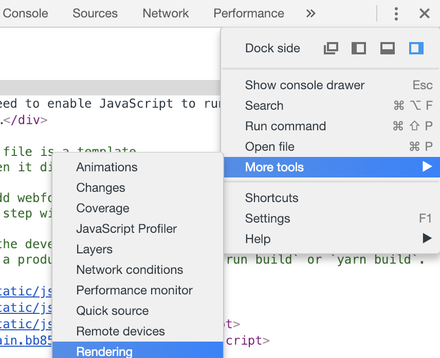<br>选<code>rendering</code>，勾选<code>FPS meter</code><br>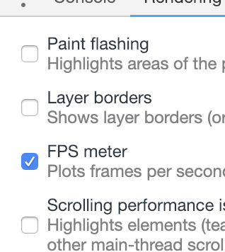<br>可以看到在60左右，是比较理想的<br>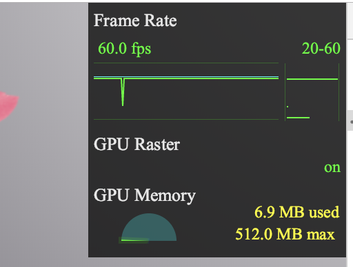</p>

      
      <!-- 打赏 -->
      
    </div>
    <footer class="article-footer">
      <!-- 
      <a data-url="http://yoursite.com/post/petalsFluttered/" data-id="ck5109kc4000kbqhsvwkfbvhj"
        class="article-share-link">分享</a>
      
       -->
    </footer>

  </div>

  
  
  <nav class="article-nav">
    
      <a href="/post/flutterOfficialExample/" class="article-nav-link">
        <strong class="article-nav-caption">上一篇</strong>
        <div class="article-nav-title">
          
            官方示例 &amp; 代码解读
          
        </div>
      </a>
    
    
      <a href="/post/macMysql8Password/" class="article-nav-link">
        <strong class="article-nav-caption">下一篇</strong>
        <div class="article-nav-title">mac mysql8 密码</div>
      </a>
    
  </nav>


  

  
  
<!-- valine评论 -->
<div id="vcomments-box">
    <div id="vcomments">
    </div>
</div>
<script src="//cdn1.lncld.net/static/js/3.0.4/av-min.js"></script>
<script src='https://cdn.jsdelivr.net/npm/valine@1.3.10/dist/Valine.min.js'></script>
<script>
    new Valine({
        el: '#vcomments',
        notify: false,
        verify: false,
        app_id: '',
        app_key: '',
        path: window.location.pathname,
        avatar: 'mp',
        placeholder: '给我的文章加点评论吧~',
        recordIP: true
    });
    const infoEle = document.querySelector('#vcomments .info');
    if (infoEle && infoEle.childNodes && infoEle.childNodes.length > 0) {
        infoEle.childNodes.forEach(function (item) {
            item.parentNode.removeChild(item);
        });
    }
</script>
<style>
    #vcomments-box {
        padding: 5px 30px;
    }

    @media screen and (max-width: 800px) {
        #vcomments-box {
            padding: 5px 0px;
        }
    }

    #vcomments-box #vcomments {
        background-color: #fff;
    }

    .v .vlist .vcard .vh {
        padding-right: 20px;
    }

    .v .vlist .vcard {
        padding-left: 10px;
    }
</style>

  

  
  
  

</article>

</section>
      <footer class="footer">
  <div class="outer">
    <ul class="list-inline">
      <li>
        &copy;
        2020-01
        MonkeyInWind
      </li>
      <li>
        <!--
        
          Power by
        
        
        <a href="https://hexo.io" target="_blank">Hexo</a> Theme <a href="https://github.com/Shen-Yu/hexo-theme-ayer" target="_blank">Ayer</a>
        
        -->
        <a target="_blank" href='https://github.com/MonkeyInWind'>GitHub</a>
      </li>
    </ul>
    <ul class="list-inline">
      <li>
        
      </li>
      <li>
        <!-- cnzz统计 -->
        
      </li>
    </ul>
  </div>
</footer>

    <div class="to_top">
        <div class="totop" id="totop">
  <i class="ri-arrow-up-line"></i>
</div>
      </div>
    </main>
    
    <aside class="sidebar">
      
        <button class="navbar-toggle"></button>
<nav class="navbar">
  
  <div class="logo">
    <a href="/"></a>
  </div>
  
  <ul class="nav nav-main">
    
    <li class="nav-item">
      <a class="nav-item-link" href="/">主页</a>
    </li>
    
    <li class="nav-item">
      <a class="nav-item-link" href="/archives">目录</a>
    </li>
    
    <li class="nav-item">
      <a class="nav-item-link" href="/Categories">分类</a>
    </li>
    
    <li class="nav-item">
      <a class="nav-item-link" href="/About">关于我</a>
    </li>
    
  </ul>
</nav>
<nav class="navbar navbar-bottom">
  <ul class="nav">
    <li class="nav-item">
      
      <a class="nav-item-link nav-item-search"  title="Search">
        <i class="ri-search-line"></i>
      </a>
      
      
    </li>
  </ul>
</nav>
<div class="search-form-wrap">
  <div class="local-search local-search-plugin">
  <input type="search" id="local-search-input" class="local-search-input" placeholder="Search...">
  <div id="local-search-result" class="local-search-result"></div>
</div>
</div>
      </aside>
      <div id="mask"></div>

<!-- #reward -->
<div id="reward">
  <span class="close"><i class="ri-close-line"></i></span>
  <p class="reward-p"><i class="ri-cup-line"></i>请我喝杯咖啡吧~</p>
  <div class="reward-box">
    
    
  </div>
</div>
      <script src="/js/jquery-2.0.3.min.js"></script>
<script src="/js/jquery.justifiedGallery.min.js"></script>
<script src="/js/lazyload.min.js"></script>
<script src="/js/busuanzi-2.3.pure.min.js"></script>

  <script src="/fancybox/jquery.fancybox.min.js"></script>


  <script src="/js/tocbot.min.js"></script>
  <script>
    // Tocbot_v4.7.0  http://tscanlin.github.io/tocbot/
    tocbot.init({
      tocSelector: '.tocbot',
      contentSelector: '.article-entry',
      headingSelector: 'h1, h2, h3, h4, h5, h6',
      hasInnerContainers: true,
      scrollSmooth: true,
      positionFixedSelector: '.tocbot',
      positionFixedClass: 'is-position-fixed',
      fixedSidebarOffset: 'auto',
    });
  </script>


<script>
  var ayerConfig = {
    mathjax: false
  }
</script>

<script src="/js/ayer.js"></script>

<script src="https://cdn.jsdelivr.net/npm/jquery-modal@0.9.2/jquery.modal.min.js"></script>
<link rel="stylesheet" href="https://cdn.jsdelivr.net/npm/jquery-modal@0.9.2/jquery.modal.min.css">


<script type="text/javascript" src="https://js.users.51.la/20544303.js"></script>
  
  
  </div>
</body>

</html>